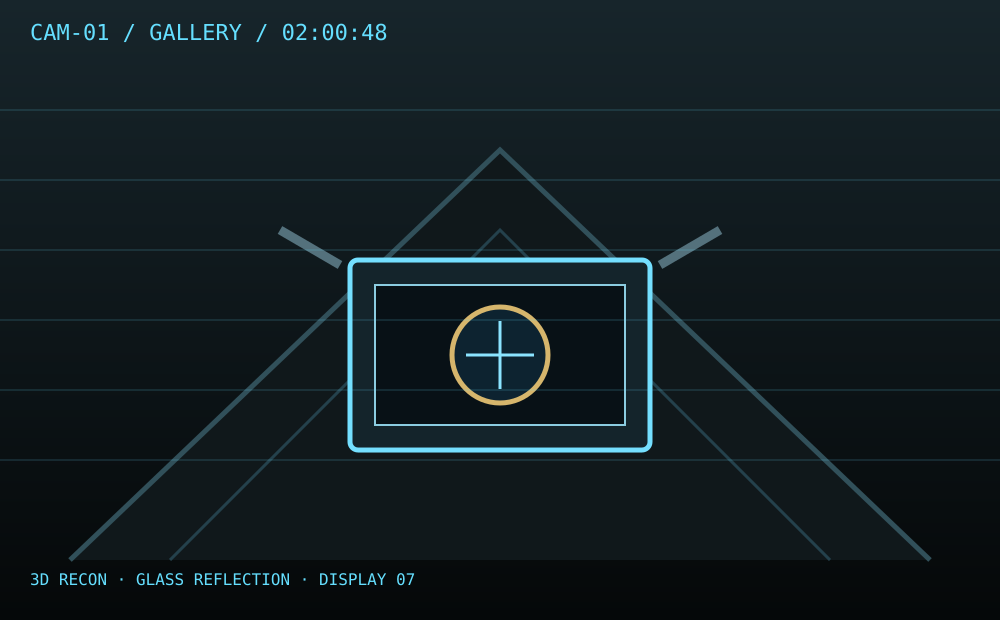
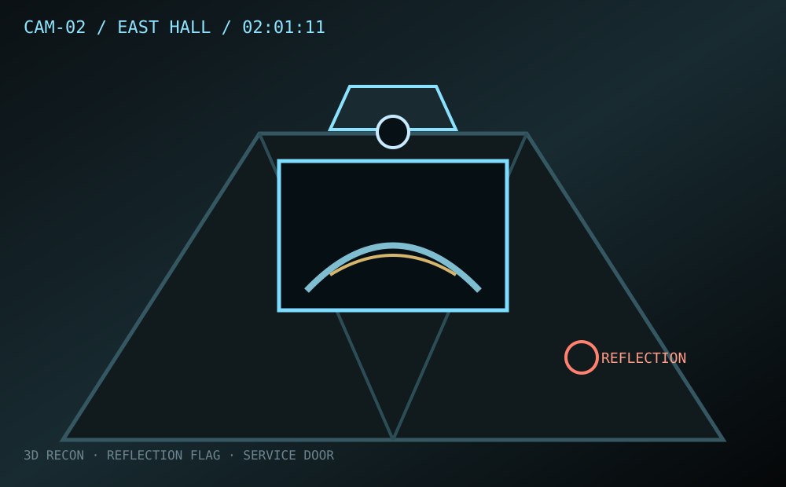
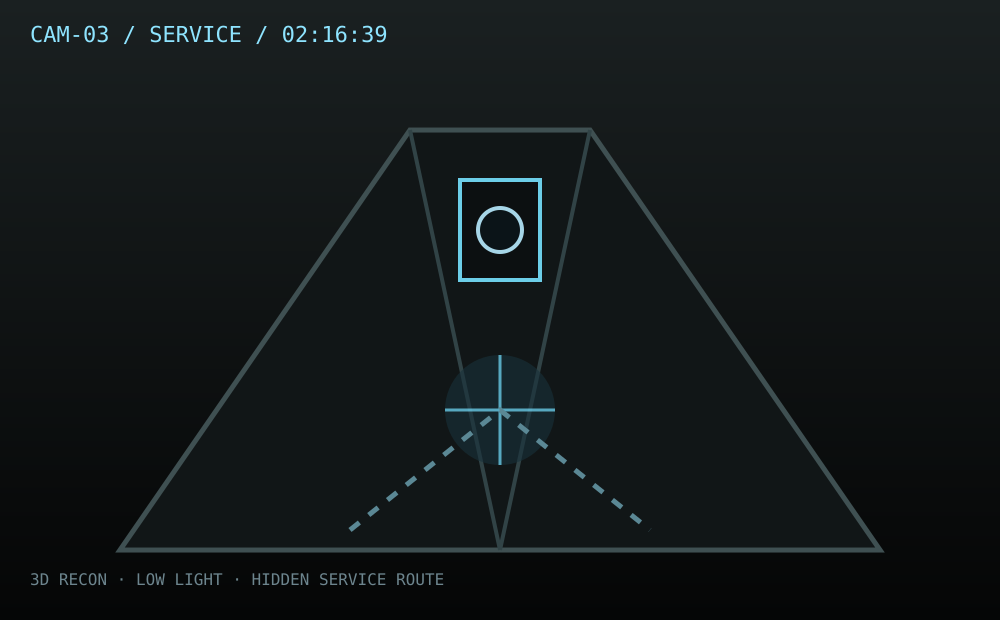

پروندههای طبقهبندیشده، تصاویر، ویدیوهای بازسازیشده و شواهد دیجیتال.
01 پرونده فعال
CASE NOTE · ۱ پرونده · ۲۳ مدرک · ۳ دوربین · ۱ پاسخ نهایی
CASE 017 / INVESTIGATION MODETOP SECRET
CASE FILE / 017
سرقت «ساعت آبی»
ساعت نجومی آبی، قطعهی اصلی نمایشگاه «زمان و نور»، درست ۲۳ دقیقه قبل از باز شدن موزه ناپدید شده است. هیچ شیشهای شکسته نیست، سیستم هشدار خاموش نشده و در خروجی اصلی هم باز نشده است.
STATUSUNSOLVEDآخرین ثبت پرونده · 09:12
CASE 017 / FIELD NOTE
ماجرا چیست؟
ساعت آبی، یک ساعت نجومی دستساز متعلق به سال ۱۹۲۸، در ویترین شماره ۷ موزه زمان نو نگهداری میشد. ساعت ۰۱:۵۴ سیستم ویترین یک بازشدن کوتاه را ثبت کرد؛ ساعت ۰۲:۰۱ دوربین راهروی شرقی یک فریم غیرعادی گرفت؛ و ساعت ۰۲:۱۷ موجودی ویترین صفر شد.
درِ اصلی موزه باز نشده. هیچ هشدار حرکتی ثبت نشده. تنها چیزی که از اتاق باقی مانده، یک دستکش پارچهای آبی، یک کارت ورود با دسترسی مخصوص و یک بازتاب عجیب در دوربین است.
«اگر مسیر ورود غیرممکن به نظر میرسد، اول مسیر خروج را پیدا کن.»
سرنخهای اصلی01:54 ویترین02:01 بازتاب02:17 موجودیکارت سطح Sدستکش آبی
DOCUMENT 017-A
گزارش حادثه
VERIFIED COPY
INCIDENT REPORT · NIGHT SHIFT
ساعت ۰۱:۵۴:۲۲ سنسور ویترین شماره ۷ برای ۱.۸ ثانیه وضعیت OPEN را ثبت کرد. سیستم ضدسرقت هیچ هشدار صوتی صادر نکرد.
ساعت ۰۲:۰۱:۱۱ دوربین راهروی شرقی برای یک فریم بازتابی ثبت کرده که در آن، درِ خدماتی انتهای راهرو نیمهباز دیده میشود؛ در حالی که سنسور در، OPEN ثبت نکرده است.
ساعت ۰۲:۱۷:۰۰ سیستم موجودی، شیء A-01 را MISSING اعلام کرد.
تمامی این رویدادها در حالی رخ دادهاند که برق، شبکه و سیستم امنیتی بدون قطعی کار میکردهاند.
CHAIN OF CUSTODY · VERIFIED
CCTV RECONSTRUCTION LAB
دوربینهای 3D
3 ANGLES · SYNTHETIC RECONSTRUCTION
این تصاویر، بازسازی سهبعدی صحنه بر اساس فریمهای پرونده هستند؛ هر دوربین یک تکه از مسیر را نشان میدهد.

CAM-01 · GALLERY02:00:48 REC ●3D RECON
بازسازی سهبعدی گالری اصلی. ویترین ۷ در مرکز قاب است و یک سایه در انعکاس شیشه دیده میشود.

CAM-02 · EAST HALL02:01:11 REC ●REFLECTION FLAG
انعکاس پنجره خدماتی چیزی را نشان میدهد که مستقیماً در میدان دید دوربین نیست.

CAM-03 · SERVICE02:16:39 REC ●LOW LIGHT
دوربین خدماتی لحظهای را ثبت کرده که چراغ انتهای راهرو روشن میشود، اما هیچ شخصی در قاب اصلی نیست.
یک فریم را انتخاب کن تا ارتباط آن با بقیه شواهد نمایش داده شود.